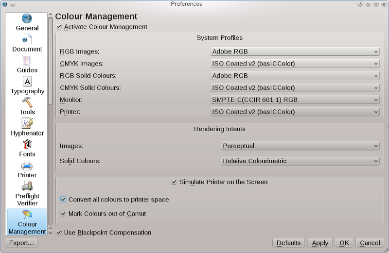

Damit das Farbmanagement richtig funktioniert, müssen die folgenden Programme verfügbar sein:
$home/.color/iccand
/usr/share/color/icc/ ,es akzeptiert also eigene Profile ebenso wie systemweit vorhandende. Unter Windows oder MacOSX sucht Scribus in den dafür vorgesehenen Systemordnern. In älteren Scribus-Versionen muß man das entsprechende Verzeichnis manuell eingeben.
Das Ziel des Farbmanagements ist es, die Unterschiede zwischen Bildschirmfarben und gedruckten Farben zu verringern und außerdem anzuzeigen, welche Farben außerhalb des Gamuts liegen, d.h. in dem gewählten Druckverfahren nicht wiedergegeben werden können. Dazu müssen Sie jedoch über ein Profil Ihres Druckers und Ihres Monitors verfügen, das einigermaßen genau ist. Für Neulinge und diejenigen, die mit anderen Anwendungen vertraut sind, können die Grundeinstellungen und deren Beschreibung ziemlich verwirrend sein. Wenn man die entsprechende Terminologie nicht kennt, ist es sehr leicht, die falschen Einstellunge auszuwählen. Bilder sehen dann entweder auf dem Bildschirm oder im Druck schlecht aus. Viele Neulinge schalten dann das Farbmanagement einfach ab.
Um es kurz zu machen: Tun Sie das nicht! Wenn Sie die grundlegenden Konzepte einmal verstanden haben und Ihr Ausgabeziel kennen, werden Sie in der Lage sein, vorherzusagen und zu kontrollieren, wie Ihr Dokument aussieht, wenn es gedruckt wird. Das ist besonders dann hilfreich, wenn später Im Offsetverfahren gedruckt wird oder wenn Sie hochauflösende PDF verschicken wollen. Soviel ich weiß, ist Scribus das erste Open-Source-Programm, das ein solches Farbmanagement anbietet. Die letzten CUPS-Versionen (seit 1.1.15) unterstützen jetzt nativen CMYK-Druck. Littlecms enthält seit Version 1.15 viele neue Funktionen, die die Fähigkeiten von Scribus, Farbe korrekt wiederzugeben, erweitern und außerdem eine bessere Performance ermöglichen.
Die notwendigen Schritte, um verläßliches Farbmanagement zu ermöglichen (Was Sie am Bildschirm sehen, ist das, was gedruckt wird):
Das Farbmanagementsystem in Scribus dient vor allem dazu, sogenannte "Softproofs" der Bilder in einem Dokument zu ermöglichen. Scribus zeigt auch Farben an, die außerhalb des Gamuts liegen und nicht gedruckt werden können (die meisten Drucker können wesentlich weniger Farben ausgeben als ein Monitor). Scribus ändert die in Bilder eingebetteten Profile nicht. Einige Bildformate, darunter glücklicherweise auch PNG und TIFF, erlauben es, ICM- oder ICC-Profile einzubetten – die Fachbezeichnung lautet Tagged. Später werden wir sehen, wann es angemessen ist, einen Tag oder ein Profil mit Hilfe von littlecms oder Photopaint einzubetten. Wenn eine Datei einen Tag enthält, wird Scribus dank littlecms dieses Profil einlesen und es dazu verwenden, es korrekter darzustellen. Falls ein Bild kein Profil enthält, Sie aber das zugehörige Geräteprofil kennen, können Sie die Farbmanagement-Einstellungen dazu verwenden, dieses Bild korrekt darzustellen, indem Sie ihm im Dokument vorübergehend dieses Profil zuweisen. Geben Sie jedoch acht, daß Sie nicht irrtümlich ein falsches Profil verwenden, und tun Sie es nur, wenn Sie sich absolut sicher sind, daß Sie die Quelle des Bildes kennen.
Das littlecms-Paket ist mittlerweile eine stabile und ausgereifte Bibliothek. Unabhängige Tests haben seine Genauigkeit bestätigt, und es wird in Drucker-Firmware einiger der exotischsten High-End-Drucker verwendet. Wenn man bedenkt, daß littlecms nur von einer kleinen Entwicklergruppe programmiert wurde, ist das Ergebnis erstaunlich, wenn man den Umfang entsprechender Projekte bei Firmen wie Kodak, Adobe, Agfa und anderen betrachtet.
Was sind Farb- oder Geräteprofile?
ICC- oder ICM- Profile sind besondere Dateien, die die Farbcharakteristika eines Gerätes (Scanner, Bildschirm, Drucker) beschreiben. Es gibt sie für praktisch jedes Gerät, das die Farbe eines digitalen Bildes erzeugen, darstellen oder verändern kann. Daneben gibt es noch sogenannte geräteunabhängige oder Arbeitsfarbraumprofile. Man kann sich diese Profile als Übersetzer vorstellen, die dazu eingesetzt werden, Daten zwischen den verschiedenen Geräteprofilen zu konvertieren. Eine ICC- oder ICM-Datei enthält Tabellen, die die mathematischen Werte enthalten, mit denen Geräte Farben messen und beschreiben. Glücklicherweise gelten dafür internationale Standards, und sie funktionieren in allen Betriebssystemen gleich.
Geräteprofile sind Dateien, die beschreiben, wie ein Gerät eine Farbe erzeugt (Scanner, Digitalkamera), wiedergibt (Monitor) oder ausgibt (Drucker). Photoshop-Anwender dürften die Option Arbeitsprofil oder Arbeitsfarbraum kennen. Diese Profile sind nicht an ein bestimmtes Gerät gebunden, sondern helfen bei der Umwandlung von einem gerät zum andern. Bekannte RGB-Arbeitsfarbräume sind etwa sRGB, Adobe® RGB 1998, Colormatch, Bruce RGB oder CIERGB. Photoshop-Anwender werden sich fragen, ob dies ein fehlendes Feature ist, aber littlecms verwendet eine eigene interne Methode zur Konvertierung zwischen den Farbräumen. Womit wir eine Sorge weniger hätten!
|  |
Wozu "Softproofing"? Mit den richtig angelegten Geräteprofilen ist Scribus in der Lage, die Farben auf dem Monitor so anzupassen, daß sie den später gedruckten entsprechen. Dies ist erst recht hilfreich, wenn Sie Ihre PDF-Datei an eine Druckerei oder ein Service-Büro schicken. Außerdem kann jedem Bild in Scribus ein eigenes Profil zugewiesen werden, so daß es auch wirklich vom Farbmanagement richtig behandelt wird, etwa wenn ein Film, eine PDF/X-3-Datei oder eine Druckplatte hergestellt werden sollen. Dadurch wird die Bilddatei selbst jedoch nicht verändert, denn die Vorschauprofile werden nur im Scribus-Dokument und in der ausgegebenen PDF-Datei verwendet. Es gibt auch zwei Werkzeuge für die Kommandozeile, nämlich tifficc und jpegicc. Mehr Informationen finden Sie in der Lprof-Dokumentation. Sie können auch Cinepaint, ImageMagick, Krita, GIMP ab Version 2.4 oder Photoshop zum Einbetten von ICC-Profilen verwenden.